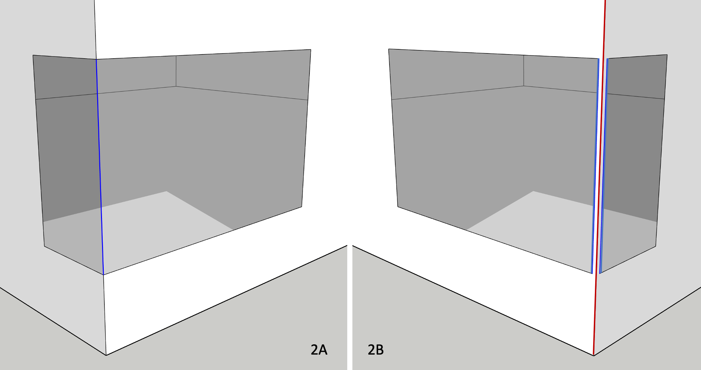

Fenestration
There are a few things to keep in mind when it comes to fenestration. Within the scope of this Guide, we consider as fenestration all sub surfaces (a technical term in OpenStudio) that are added to opaque, above-grade host surfaces like walls, roofs or exposed floors. This includes of course windows and skylights, but in this context also unglazed products like roof hatches and opaque doors. TBD is unconcerned with the nature of individual fenestration products per se, but rather the rough opening (in the host surface) required to harbour each fenestration product. Each rough opening typically requires additional framing along “sill”, “head” and “jamb” edges, with corresponding “fenestration” psi factors.
Figure 1A illustrates a residential entrance, complete with glazed door, (partial height) left and right sidelights, as well as a 3-section transom spanning the full width of the rough opening.

In OpenStudio, this 5-section entrance would be greatly simplified, and modelled as shown in Figure 1B.

-
Unless modelling a tubular daylighting device (TDD), a fenestrated surface must align with its host surface, i.e. they both must share the same 3D plane equation and the sub surface must fit within host surface boundaries.
-
TBD tags fenestration perimeter edges (shared with its host surface) as either “head”, “sill” or “jamb” (depending on the situation, the door “sill” edge may later be overridden as a “grade” or “rimjoist” edge).
-
“head”, “sill” and “jamb” (as well as “grade” or “rimjoist”) edges generally constitute major thermal bridges, derating the host wall (never the sub surface). Compact fenestration (e.g. modest sub surface perimeter-to-area ratios) minimizes thermal bridging of the host wall construction.
-
TBD tags shared edges between sub surfaces (highlighted in blue) as (mild) “transitions” - by default, no derating results from such edges. It is presumed that any additional heat loss from fenestration framing (shared between sub surfaces or along perimeter edges) would be factored in e.g. the NFRC-rated fenestration U-factor.
Frame & Dividers
OpenStudio (and EnergyPlus) users can optionally associate frame & divider properties to most glazed sub surfaces. In a nutshell, this allows fenestration product frames (and dividers) to be modelled/simulated separately from glazing layers, in line with NFRC 100 rating procedures. This allows inter alia a more robust assessment of fenestration aspect ratios on energy performance (e.g. 1x larger fenestration product outperforming many narrower, smaller products). OpenStudio fenestration, with frame & divider properties, requires 3D modelling of the glazing portion ONLY of each sub surface - not the rough opening, as illustrated in Figure 1C (same entrance design).

TBD recognizes added frame and divider properties in an OpenStudio model, and feeds Topolys offset sub surface vertices, as illustrated in Figure 1D. By relying on offset sub surface vertices, “head”, “sill” and “jamb” edges remain the same as in Figure 1B. This is also the case for “transition” edges shared between sub surfaces (highlighted in blue). So added frame and divider properties will not generate issues for TBD. Note however that TBD will catch (and log) invalid OpenStudio frame & divider inputs that generate conflicts with either host surface boundaries or with other sub surfaces.

Frame & divider properties also allow outside and inside reveals (i.e. sub surface setbacks with respect to exterior and/or interior surfaces), as illustrated in Figure 1A. In such cases, TBD considers “head”, “sill” and/or “jamb” psi factors to account for the effect of reveals.
Proximity tolerances
A shared edge between two sub surfaces at a corner (e.g. the single vertical edge highlighted in blue in Figure 2A) is also tagged by TBD as a (mild) “transition”. Again, any additional heat loss resulting from corner mullions should preferably be factored in NFRC fenestration rating procedures, and thus shouldn’t derate host wall constructions.
In Figure 2A, Topolys breaks its own copy of the original, full wall-height OpenStudio corner edge into 3x distinct, vertically-aligned segments:
- 1x “transition” edge, shared between both windows (in blue)
- 1x “corner” edge above both windows
- 1x “corner” edge below both windows
By default, any sub surface edge defined within 10 mm of another sub surface edge (or a host surface edge, e.g. a corner) is merged in Topolys as a single, shared edge. If gaps between the corner edge (highlighted in red in Figure 2B) and both nearby window jambs (on either side, highlighted in blue) are 10 mm wide in OpenStudio, then all 3x nearby edges (1x broken corner segment + 2x jambs) would be modelled in Topolys as a single edge (as in Figure 2A). There is no difference between the application of Topolys’ built-in tolerances and what’s illustrated in Figure 2A, even if all 3x edges aren’t perfectly aligned in the OpenStudio model (as in Figure 2B).

When such gaps exceed Topolys’ built-in tolerances (e.g. 25 mm in Figure 2B), TBD instead considers a nearby sub surface edge (e.g. along a corner) as a fenestration “jamb” edge, even though a 25 mm gap between jamb and corner edges makes little sense from a construction perspective. Such gaps often occur as modelling artefacts (often inadvertently) in either legacy OpenStudio models or in those imported from 3rd-party applications. This automated switch, from (mild) “transition” to “jamb” edge types, necessarily means more heat loss from thermal bridging (vs Figure 2A). TBD provides users a sub surface proximity tolerance (see menu options) as an optional means to override this default behaviour. If, for instance, a user sets a proximity tolerance of 50 mm (or rather 0.050 m), TBD ignores the aforementioned 25 mm gaps and sets the 2x sub surface jamb edges near the corner as (mild) “transitions” (both edges highlighted in blue in Figure 2B).
There is no difference when derating host wall surfaces, from fenestration perimeters alone, in either figures 2A or 2B. However, the proximity tolerance does not reset the corner edge (in red in Figure 2B) as a (mild) “transition”. The corner edge continues uninterrupted, spanning the full wall height - one should expect additional heat loss from the “corner” edge in Figure 2B (vs Figure 2A). This can be corrected by adjusting the “corner” psi factor in TBD - a practical tweak, yet somewhat finicky.
TBD matches edges this way by comparing origin and terminal vertices of any pair of nearby edges. TBD does not apply a proximity tolerance when sub surface edges are mismatched as in Figure 3A.

This can be corrected in OpenStudio by splitting for instance the larger window into two smaller (yet aligned) windows (which adds a new horizontal “transition” edge in blue, shown in Figure 3B). If the gaps between both upper window jambs and corner edge are within the user-set proximity tolerance, then both nearby window jambs will also be reset as (mild) “transitions” (both vertical edges are highlighted in blue in Figure 3B). Note that the corner edge continues uninterrupted, spanning the full wall height (in red in both figures 3A and 3B, just as in Figure 2B).
Multipliers
Similar to the use of space multipliers (a proxy for story multipliers), discussed under tagging rules, OpenStudio allows users to enable fenestration multipliers. For instance, a single OpenStudio window (with 10x as a multiplier) will take less time to simulate then 10x windows. No doubt a practical feature, yet caution is warranted as it disables a number of options and casts doubt on solar and daylighting distribution within spaces. Regardless, TBD will process perimeter fenestration edges (as thermal bridges), while taking into consideration fenestration multipliers, e.g.
- 10x window “sill” thermal bridges
- 10x window “head” thermal bridges
- 20x window “jamb” thermal bridges
… when a single OpenStudio window is defined with 10x as a multiplier. Weighing the pros and cons of using sub surface multipliers in OpenStudio would not be contingent on using TBD.